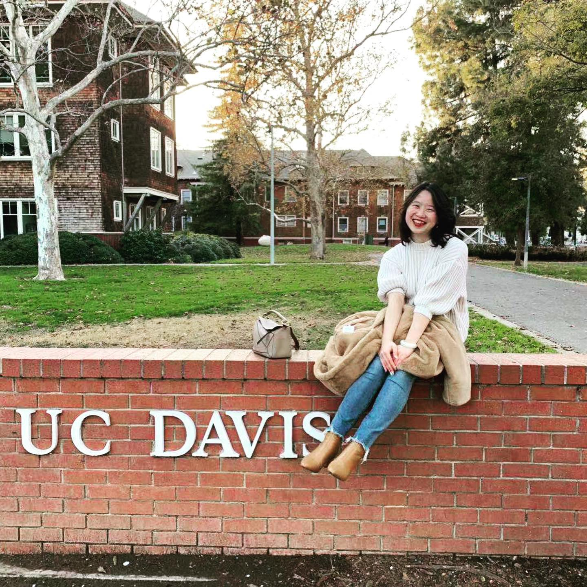

About me
My name is Jiaying He, but I prefer to be called Maria. I have a M.S degree in Business Analytics from Santa Clara Univeristy and a B.S degree in Managerial Economics with a minor in Art History from UC Davis. Through my studies and internships, I found data analytics is crucial for making business decisions. During my Master's program at Santa Clara University, I worked on various proejects and explored data analysis in Finance, Marketing, and Supply Chain.
Fun facts about me: I moved to the U.S at age of 16, and studied since then. I am bilingual in Mandarin and English. I also studied French for 2 years and Japanese for 1 year.
